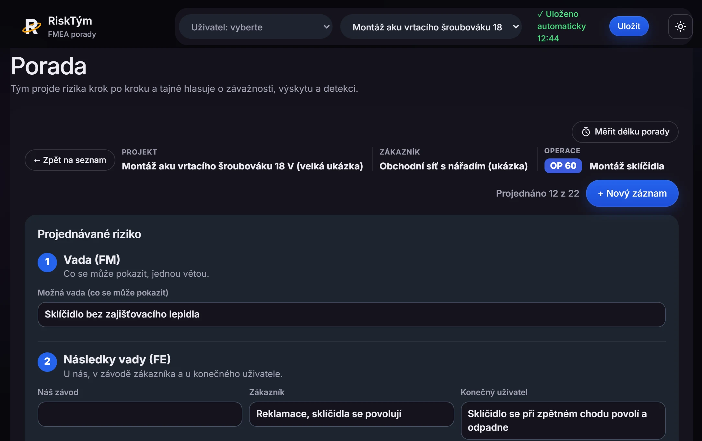
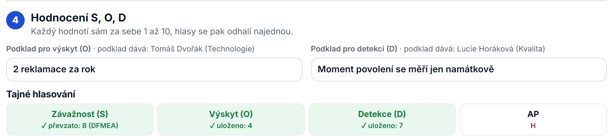
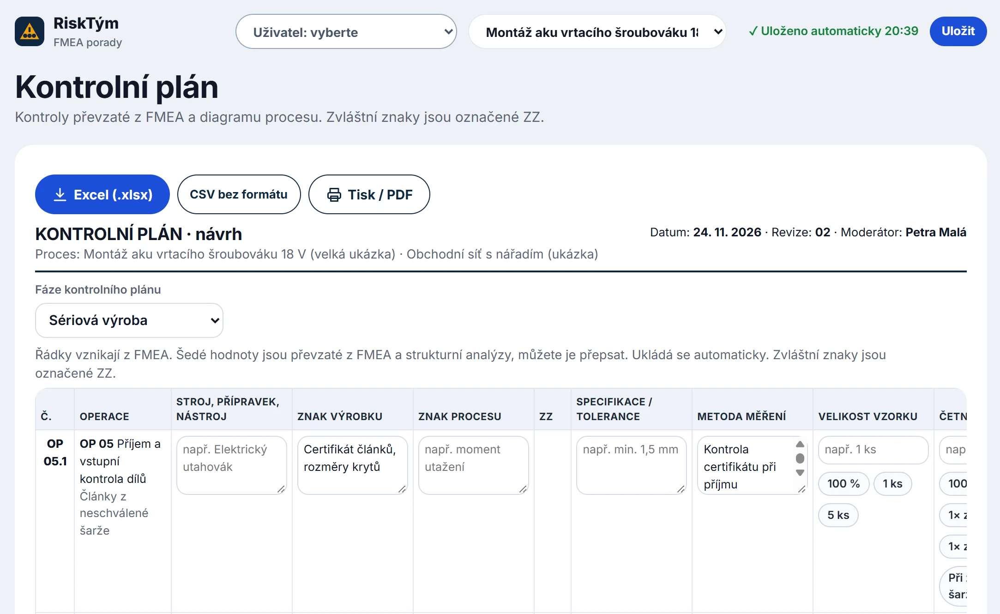
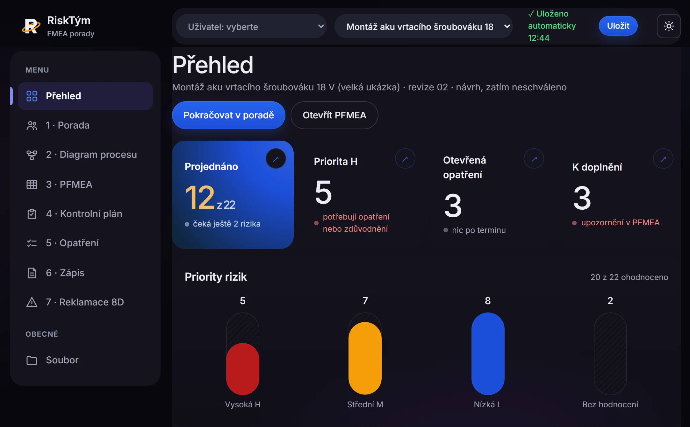

Zapíšeš poradu a všechny související dokumenty se vyplní automaticky
Dnes trvá FMEA porada hodinu a pak se ještě hodiny ručně vypisuje PFMEA, kontrolní plán, opatření a zápis. V RiskTýmu se vyplní samy z toho, co tým zapíše na poradě. Po poradě je hotovo.
Běží v prohlížeči, nic se neinstaluje. Firma a rizika v ukázce jsou vymyšlené.
Kolik času to ušetří
Porada zůstane stejně dlouhá. Odpadne všechno, co se dnes dělá po ní.
Dnes
- Porada1 hodina
- Přepsat poznámky do PFMEApo poradě
- Upravit kontrolní plánpo poradě
- Sepsat opatření a termínypo poradě
- Napsat a rozeslat zápispo poradě
Další hodiny práce, často až za pár dní
S RiskTýmem
- Porada1 hodina
- PFMEAhotová
- Kontrolní plánhotový
- Opatření s termínyhotová
- Zápishotový
Po poradě se nic nepřepisuje
Kolik hodin přesně odpadne, záleží na velikosti FMEA. RiskTým měří délku porady, takže skutečný čas uvidíš na vlastní poradě.
Jak to funguje
Tři kroky na jedné poradě.
Tým projde proces krok po kroku
U každého kroku moderátor zapíše, co se může pokazit, proč a jak tomu dnes ve výrobě bráníte.

Každý hodnotí sám za sebe
Odborník řekne podklad: k výskytu technolog, k detekci kvalita. Pak hlasují všichni a hlasy se ukážou najednou. Když se hodně rozejdou, odborník hodnocení zdůvodní a zdůvodnění jde do zápisu. Nerozhoduje většina ani šéf.

Dokumenty se vyplní samy
Jedno rozhodnutí se propíše do PFMEA, kontrolního plánu, opatření i zápisu. Když se změní kontrola, změní se všude.

Co z jedné porady vznikne
Přepínej a prohlédni si všechno, co RiskTým vyplní. Kliknutím obrázek zvětšíš.

Přehled. Stav celé FMEA na jedné obrazovce: kolik je projednáno, priority, opatření s termíny a tým.
Trénink pro nováčky
Cvičná porada na mobilu. Nováček sám hodnotí rizika a na konci dostane body, porovnání s týmem a záznam o zaškolení.
Na skutečnou poradu pak přijde připravený.
Zahrát si trénink
Časté otázky
Pro koho to je?
Pro firmy, kde je FMEA povinná: automotive, letectví, farmacie, zdravotnické prostředky, elektronika a strojírenství.
FMEA už máme v Excelu. Co s ní?
RiskTým ji z Excelu načte a výsledek porady umí zapsat zpátky do vaší firemní šablony. Dokumenty tak dál ukládáte ve svém formátu.
Kam se ukládají data?
Jen k vám: do prohlížeče a do souboru na vašem disku. Nic se neposílá na internet. RiskTým může běžet i na firemním intranetu, podrobnosti jsou na stránce Informace pro IT.
Musí se něco instalovat?
Ne. Otevře se v prohlížeči na počítači, tabletu i mobilu.
Co v ukázce nefunguje?
Ukládání do souboru a export do Excelu jsou vypnuté. Prohlížet, klikat, hlasovat a tisknout do PDF můžeš bez omezení. Plná verze je na vyžádání.
Je výrobce nářadí skutečný?
Ne. Firma Ozubené kolečko, její aku vrtací šroubovák, lidé u stolu i všechna rizika jsou vymyšlené a nesouvisí s žádným skutečným výrobcem.
Vyzkoušej si to sám
Ukázka se otevře rovnou s rozpracovanou FMEA montáže aku šroubováku.